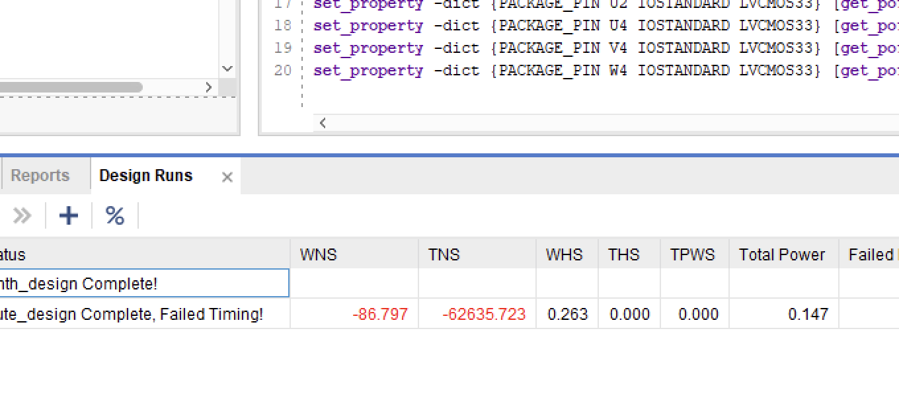

mnist classifier on custom risc-v.
-
i made a mnist classifier which runs on custom risc-v core. the core itself is running on basys 3 fpga. the basys 3 is an entry level digital circuit development board built around the xilinx artix 7 fpga architecture.
it all started with my desire to run a risc-v core on fpga then play doom on it but it turned out that this is not the easiest task to start learning systemverilog and hardware design. so i ended up designing a core to run a simple mlp model on it.

classifying 7 as 7 :)
// achieving single cycle execution
a single cycle risc-v processor executes an entire instruction from rv32i instruction set in one clock cycle. in my case the instruction set was not rv32i but rv32im. the difference is you have the multiplication and division instructions on top of integer operations. i'll explain the details later why we needed the "m" operations.
in every clock cycle our processor does below operations:
- instruction fetch
- decode
- execute
- memory access
- write back
/// instruction fetch
we've a rom module which has 64kb available space to store our instructions. in every clock cycle we should be able to fetch an instruction from our rom by using our "program counter (pc)" address to execute it. it gets tricky when we have branches and "jump and link" instructions since they require special update to our pc address. branches basically tell the program where it should go next if the conditions are met or not. jump and link instructions are used to execute functions then go on with the rest of the program by saving where it started in the first place to a register.
in short we can say that we save our main program in a module called rom. instead of using limited lut resources to store our instructions, this module was supposed to synthesize into a "bram" block which consists of dedicated on-chip sram blocks. but bram module in artix 7 fpga has some requirements to be used. the designer, has to design the read and write operations in a synchronous (clocked) way. otherwise synthesizer uses luts to implement a data storage like lutram. the main design problem is we should be able to receive the instruction within same clock signal where pc changed since we are building a single clock cycle processor. so that's why i designed the rom in a combinational way to make the instruction available instant after pc changes. this design uses a lot more resources since rom is not synthesizing into a bram.
this makes our core use too much energy, to not meet with time constraints, to not being implemented on the fpga since it uses too much resource.

:/
/// decode
decode step is pretty straightforward. we divide the instruction into parts that we're going to use with our different operations. this logic is also implemented in combinational circuit since decoded information has to be available to use after fetching the instruction, within the same clock cycle.
/// execute, memory, write back
we complete all these three steps in one procedural block. we execute the instruction then write the value back into the destination register. this design also has its own flaws. the data from memory has to arrive processor, or reach ram within same clock cycle. as you can guess this causes clock frequency to decrease.
for example: load operations from ram takes two turns. we send address to ram, ram gets the address then sends the data back to processor, processor writes the data into destination register. no wonder why this design can't catch up with the clock frequency.

no slack
i've also experienced the same issue with ram as rom. ram was also not synthesizing into a bram block and it was using lutram(s). the reason was simple once again, we have to send the data from ram to processor within the same clock cycle. so whenever an address provided to ram, it has to output the data immediately. because of this, read operation wasn't synchronous. non-synchronous implementation of ram doesn't synthesize into bram. exceeding resources once again.
// conclusion on single cycle core
so single cycle implementation was great in simulation but it was not realistic. in simulation; all tests (riscv-tests) passed, i saw the expected result when i ran the mnist classifier but it is impossible to embed this design into fpga. that's when i decided to make the processor multi cycle. the idea was dividing an instruction into different execution parts and turn our current logic into a finite state machine.